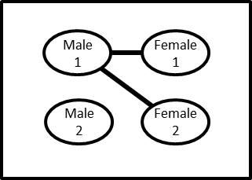

Exercise 4: The population level, numerically
Introduction
This is the most complex of the four exercises, but also potentially the most powerful. Here we will do a full simulation of a dynamic network to see how the presence or absence of relational concurrency affects the prevalence of an STI. On this page, we will describe the basic goals and structure of the model. On the next page, we offer an R tutorial for those users who are not already familiar with the language. Those who are familiar may choose to skip the tutorial and proceed directly to the next page, which contains the model code and instructions. We also link to an interface that allows one to explore the model without dealing directly with any code, for use alone or in conjunction with code-based explorations; users who only wish to use this interface may skip the R tutorial as well.
Our model will track a population of 10,000 people: 5,000 women and 5,000 men. We will create two separate data tables: one for women, and one for men. The women will be noted by an ID number (females 1-5000, corresponding to rows 1-5000 in the female data table), as will the men (males 1-5000, corresponding to rows 1-5000 in the male data table). We will keep track of two pieces of information about each individual over time: their HIV status, and, for those who are infected, the amount of time since they were infected.
In addition, we will model sexual relationships within this population at any given time. We will consider only heterosexual relationships. We will store information about the set of ongoing relationships in a matrix, with one relationship per row, and with two columns: the first column will have the ID number of the female in the relationship, and the second column will have the ID number of the male.
Relationships will form and break over time. To keep the model as simple as possible, we will assume that all existing relationships have the same probability of dissolving. As with the previous exercises, we will implement multiple scenarios for the sake of comparison, with either concurrency present or prohibited. In fact, this exercise allows the user to turn concurrency on and off separately for women and for men, so that we can see how disease prevalence differs when both sexes, one sex, or neither sex are allowed to have concurrent partnerships. Note that it is indeed mathematically possible for the two sexes to have different levels of concurrency, and for one to have high levels and the other to have none at all. For instance, imagine a very simple sexual network at one moment in time:

In this network at this time, 50% of men (1 of 2) have concurrent partners, while 0% of women (0 of 2) do. However, the mean number of ties for men (1 per man, averaged from 2 ties for male 1 and 0 ties for male 2) equals the mean number of ties per woman (1 per woman, averaged from 1 tie for female 1 and 1 tie for female 2).
Although the different versions of the model will differ in the level of concurrency, they will have the same overall number of sexual partnerships occurring, the same mean duration for relationships, and the same number of coital acts.
Because this model includes more specific information about the absolute time at which events occur, we can and will make use of information about how the probability of transmission changes as a function of the amount of time the transmitting partner has been infected. That is, we will bring in the “acute infectivity” effect that we explored in Exercise 1. We will use estimates for HIV specifically, drawn from Hollingsworth et al. (2008), which are based on Ugandan serodiscordant couple data (Wawer et al. 2005). These estimates are calculated as monthly transmission probabilities, so each time step in our model will represent a month.
Some aspects of our model are realistic, and others are not. Remember, our goal is to isolate the effect of concurrency, while keeping the model as simple as possible for researchers who are relatively new to modeling. Those who find the insights they gain from these exercises to be provocative are encouraged to learn more about modeling so that they can read both the modeling and the empirical literatures on concurrency with deeper understanding.
Code
The R code for Exercise 4 is printed below. Use the copy button at the top right of the code block to copy it, and paste it into a fresh .R file in your working directory (type getwd() to confirm this location). You can then run the code line by line, or run the entire simulation at once by typing
source("concurrency_exercise_4.R")(or whatever you named the file when you saved it).
Note that when you run the full set of code, it may take 10-15 seconds at the end before your output appears; simulation takes time.
The model as currently set will simulate a population in which concurrency is not allowed for either sex; relationships last a mean of 10 months; the average person is in 0.8 relationships at any time; and initial prevalence is 2%. We suggest:
- First run the model as is, and note the levels of prevalence that emerge.
- Change the two lines at the top about enforcing monogamy from T to F, and rerun.
- Try changing one line to F and one line to T and rerun. Try the reverse.
- Play around with other parameters, like the mean degree, or the initial number of infected people, or the mean relational duration. This allows one to see how general the patterns initially observed are.
- At some point, try stepping through the code line by line, so as to really get a sense of what is happening at each point. Feel free to query different objects as you go to see what they equal, in order to increase your intuition. Because of the time loop in the code, you may want to replace the loop with a single time step so you can run each line in the loop independently.
An additional option is to use the interactive web app that hides the code in the background, and simplifies the process of exploring multiple scenarios. One may use this in addition to, or instead of, working with the code directly. This also allows the scenarios to begin with lower prevalence (1%) than the code does by default, and demonstrate that the equilibrium prevalence is still the same. A third option is to explore the code using the R package concurrency.sim.
####################################
# Parameters
####################################
force.feml.monog <- F # Should we enforce a rule of female monogamy?
force.male.monog <- F # Should we enforce a rule of male monogamy?
n.femls <- 5000 # Number of females
n.males <- 5000 # Number of females
expected.meandeg <- 0.8 # Mean degree (= average # of relationships a person is at any moment in time
avg.duration <- 10 # Mean duration of a relationship (in months)
numtimesteps <- 1200 # Length of simulations (in months)
init.number.of.infected.femls <- 100 # How many females are infect at the outset of the simulation?
init.number.of.infected.males <- 100 # How many males are infect at the outset of the simulation?
beta.by.time.since.inf <- c(rep(0.2055,3), # Probability of transmission per month for active relationship
rep(0.0088,100),rep(0.0614,9),rep(0,10)) # From Hollingsworth et al. 2008
####################################
# Basic calculations and book-keeping
####################################
n.pop <- n.femls + n.males # Total pop size
expected.edges <- round(expected.meandeg*(n.pop)/2) # Expected # of relationships ("edges") in the population at any time
prob.dissolution <- 1/avg.duration # Daily prob of dissolution for an existing relationship
time.of.aids.death <- length(beta.by.time.since.inf) # Length of time from HIV infection until death (in months)
cum.num.feml.aids.deaths <- 0 # Cumulative # of female AIDS deaths
cum.num.male.aids.deaths <- 0 # Cumulative # of female AIDS deaths
feml.prev <- vector() # Sets up a vector to store female prevalence at each time step
male.prev <- vector() # Sets up a vector to store male prevalence at each time step
####################################
# Creating the female data frame
####################################
femls <- data.frame(row.names=1:n.femls) # Creates a data frame to store info about the females. One row per female.
femls$hiv.status <- rep(0,n.femls) # Create a variable in the female data frame called "hiv.status". Give all females the value 0 (for the moment).
femls$inf.time <- NA # Create a variable in the female data frame called "inf.time" (infection time). Give all females an NA (for the moment).
if (init.number.of.infected.femls>0) { # If there are any initially infected females,
init.inf.f <- sample(1:n.femls, init.number.of.infected.femls) # Sample from vector of female ids with size of initially infected females
femls$hiv.status[init.inf.f] <- 1 # Give them infection
init.inf.time.f <- sample(0:(-time.of.aids.death+2),
init.number.of.infected.femls, replace=TRUE) # Sample times backwards from present to length of infection
femls$inf.time[init.inf.f] <- init.inf.time.f # Assign.
}
####################################
# Male data frame
####################################
# All parallel to female data frame above
males <- data.frame(row.names=1:n.males)
males$hiv.status <- 0
males$inf.time <- NA
if (init.number.of.infected.males>0) {
init.inf.m <- sample(1:n.males, init.number.of.infected.males) # Sample from vector of female ids with size of initially infected females
males$hiv.status[init.inf.m] <- 1 # Give them infection
init.inf.time.m <- sample(0:(-time.of.aids.death+2),
init.number.of.infected.males, replace=TRUE) # Sample times backwards from present to length of infection
males$inf.time[init.inf.m] <- init.inf.time.m # Assign.
}
####################################
# Initial contact network
####################################
edgelist <- data.frame(row.names=1:expected.edges) # Create a data frame that will be used to hold the IDs of the relationship pairs
if (force.feml.monog==FALSE) { # If we are *not* enforcing female monogamy,
edgelist$f <- sample(1:n.femls,expected.edges,replace=T) # sample from the female IDs with replacement, and assign them to a column in the data frame called "f"
} else { # otherwise,
edgelist$f <- sample(1:n.femls,expected.edges,replace=F) # sample from the female IDs without replacement, and assign them to a column in the data frame called "f"
}
if (force.male.monog==FALSE) { # Same for males
edgelist$m <- sample(1:n.males,expected.edges,replace=T)
} else {
edgelist$m <- sample(1:n.males,expected.edges,replace=F)
}
table(tabulate(edgelist$f)) # These rather odd lines provide a check to see a table of relationships per person in the population. When monogamy is enforced for
table(tabulate(edgelist$m)) # either sex, the corresponding table should be limited to 0's and 1's; when it os not enforced, the table is not limited.
#################################### # Everything until now was set-up; now this is the core of the simulation.
# Time loop # We will simulate forward in time, considering transmission, vital dynamics, and relational dynamics at each time point.
####################################
for (time in 1:numtimesteps) {
# Transmissions
hiv.status.feml.partners <- femls$hiv.status[edgelist$f] # Create a vector containing the HIV status for the female partner in each relationship
hiv.status.male.partners <- males$hiv.status[edgelist$m] # Create a vector containing the HIV status for the male partner in each relationship
sdpf <- which(hiv.status.male.partners==0 & # Make a vector of IDs for the relationships that are serodiscordant with positive female (SDPF)
hiv.status.feml.partners == 1)
f.in.sdpf <- edgelist$f[sdpf] # Make a vector of IDs for the females in the SDPF relationships
inf.time.sdpf <- time - femls$inf.time[f.in.sdpf] # Make a vector that identifies how long before present these females were infected
prob.trans.sdpf <- beta.by.time.since.inf[inf.time.sdpf] # Determine probability of transmission in the SDPM relationships, based on time since the male was infected
trans.sdpf <- rbinom(length(sdpf),1,prob.trans.sdpf) # Flip a weighted coin for each SDPF relationship to determine if transmission occurs
newly.inf.males <- edgelist$m[sdpf[trans.sdpf==1]] # Double-indexing (an R specialty!) This lets you get the identities of the newly infected males in one step.
males$hiv.status[newly.inf.males] <- 1 # Assign the newly infected males an hiv.status of 1
males$inf.time[newly.inf.males] <- time # Assign the newly infected males an infection time of time
sdpm <- which(hiv.status.feml.partners==0 & # All parallel for serodiscordant with positive male (SDPM)
hiv.status.male.partners == 1)
m.in.sdpm <- edgelist$m[sdpm]
inf.time.sdpm <- time - males$inf.time[m.in.sdpm]
prob.trans.sdpm <- beta.by.time.since.inf[inf.time.sdpm]
trans.sdpm <- rbinom(length(sdpm),1,prob.trans.sdpm)
newly.inf.femls <- edgelist$f[sdpm[trans.sdpm==1]]
femls$hiv.status[newly.inf.femls] <- 1
femls$inf.time[newly.inf.femls] <- time
# Deaths to AIDS
femls.dying.of.AIDS <- which(time-femls$inf.time==time.of.aids.death) # Which females have been HIV+ long enough to die of AIDS?
males.dying.of.AIDS <- which(time-males$inf.time==time.of.aids.death) # Which females have been HIV+ long enough to die of AIDS?
cum.num.feml.aids.deaths <- # Increase cumulative # of female AIDS deaths by the newly dying females
cum.num.feml.aids.deaths + length(femls.dying.of.AIDS)
cum.num.male.aids.deaths <- # Increase cumulative # of male AIDS deaths by the newly dying males
cum.num.male.aids.deaths + length(males.dying.of.AIDS)
# End of ties because of death
edges.with.feml.dying.of.aids <- # Determine the IDs of those relationships involving dying women
which(edgelist$f %in% femls.dying.of.AIDS)
edges.with.male.dying.of.aids <-
which(edgelist$m %in% males.dying.of.AIDS) # Determine the IDs of those relationships involving dying women
edges.with.either.dying.of.aids <-
c(edges.with.feml.dying.of.aids,edges.with.male.dying.of.aids) # Combine the two
if (length(edges.with.either.dying.of.aids>0)){ # Remove those edges from the edgelist
edgelist <- edgelist[-edges.with.either.dying.of.aids,]
}
# End of other ties randomly
edges.coinflip <- rbinom(dim(edgelist)[1],1,prob.dissolution) # Flip a weighted coin for each remaning relationship
edges.to.break <- which(edges.coinflip==1) # Make vector of those edges to break
if (length(edges.to.break>0)) { # If there are any edges to break,
edgelist <- edgelist[-edges.to.break,] # then break them.
}
# Add new edges
num.ties.to.add <- expected.edges - dim(edgelist)[1] # Determine how many edges to add. (We assume same as # broken in this simple model.)
if (num.ties.to.add>0) { # If there are edges to add,
if (force.feml.monog==F) { # and if we are *not* enforcing female monogamy,
f <- sample(1:n.femls,num.ties.to.add,replace=T) # sample from the female IDs with replacement,
} else { # else if we are enforcing female monogamy,
femls.with.no.ties <- setdiff(1:n.femls,edgelist$f) # determine which women do not currently have a relationship, and
f <- sample(femls.with.no.ties,num.ties.to.add,replace=F) # sample from them without replacement
}
if (force.male.monog==F) { # and if we are *not* enforcing male monogamy,
m <- sample(1:n.males,num.ties.to.add,replace=T) # sample from the male IDs with replacement,
} else { # else if we are enforcing male monogamy,
males.with.no.ties <- setdiff(1:n.males,edgelist$m) # determine which men do not currently have a relationship, and
m <- sample(males.with.no.ties,num.ties.to.add,replace=F) # sample from them without replacement
}
new.edges <- data.frame(f,m) # Combine the new males and females into pairs in a data frame
edgelist <- data.frame(rbind(edgelist,new.edges)) # "Bind" that data frame onto the end of our existing esgelist
row.names(edgelist) <- 1:dim(edgelist)[1] # Rename the rows of the updated edgelist so they are consecutive numbers again.
}
# Insert new births
new.feml.ids <- femls.dying.of.AIDS # Make a vector of the IDs of the women who just died. We shall "replace" them with a new arrival, by
femls$hiv.status[new.feml.ids] <- 0 # setting the HIV status of that node back to 0, and
femls$inf.time[new.feml.ids] <- NA # setting the infection time for that node back to NA.
new.male.ids <- males.dying.of.AIDS # All parallel with males.
males$hiv.status[new.male.ids] <- 0
males$inf.time[new.male.ids] <- NA
# Track prevalence
feml.prev[time] <- mean(femls$hiv.status) # Calculate current female prevalence and append it onto the female prevalence vector.
male.prev[time] <- mean(males$hiv.status) # Calculate current male prevalence and append it onto the male prevalence vector.
}
windows(20,10) # These two lines set up a plotting window
par(mfrow=c(1,2)) # with two panels.
plot(feml.prev,main= "Female prevalence over time ",ylim=c(0,0.5)) # Plot female prevalence over time
plot(male.prev,main= "Male prevalence over time ",ylim=c(0,0.5)) # Plot male prevalence over timeDiscussion
When one runs the code as is, and then turns concurrency on and off, one finds the following HIV prevalences at equilibrium:
| Network model | Prevalence |
|---|---|
| Concurrency allowed for both sexes | about 29% for both sexes |
| Concurrency allowed for one sex but not the other | about 18% for the sex without concurrent partners, and about 15% for the sex with concurrent partners |
| Concurrency not allowed for either sex | about 1% for both sexes |
And, when one follows through all of the detailed logic of the code, one can see for oneself that each model includes the same amount of partnerships and the same number of sexual acts as the others. The only difference is whether concurrency is allowed or not. And this simple fact is the difference between 29% HIV prevalence and 1% HIV prevalence. One also sees, in the cases where one sex could have concurrent partners and the other could not, that not only was there an intermediate-sized epidemic, but the sex that could not have concurrency ended up with the greater prevalence. This matches the fundamental point about how concurrency works that we have been reiterating throughout this tutorial: concurrency leads to higher prevalence in the partners of those with concurrent partners.
Note that these numbers combine all of the different phenomena by which concurrency operates; they result jointly from the effect of backwards transmission (partly offset by reduced forward transmission), acute infectivity, and path acceleration.
Of course this scenario was selected as the default because it presents a dramatic picture. How generalizable is this trend? And what happens at the behavioral values that seem most realistic? As one explores further, one will see that the concurrency simulations always generate larger epidemics than the same scenario without, and that there is a reasonable behavioral range over which one gets a large epidemic with concurrency and none or very little without.
As we stated at the outset, there are various simplifications for this model. The most important one is that concurrency can only be handled in a binary fashion: either the model allows it or doesn’t (within each sex), and when it does allow it, the amount of concurrency is determined by the mean degree alone. There is no way to model different levels or patterns of concurrency for a given number of sexual relations. This is of course an important thing to be able to do—one wants to be able to simulate observed behavioral data, including mean degree and prevalence of concurrency for both men and women, as faithfully as possible to one’s data. That requires a much more sophisticated set of modeling tools than we can provide in an introduction like this, but that is precisely what is done in the concurrency modeling literature. For those interested in learning more about these tools, see the More Resources section.
And of course, there are many other simplifications. This model did not include any coital dilution (the tendency for people in multiple simultaneous relationships to have fewer sex acts per unit time with one or more of their partners than someone in one relationship). We did not model circumcision, or co-infections with STIs, or treatment, or many other things. There was no age structure present. All of those things can be added, making the model more realistic but more difficult for modeling newcomers to understand them. We hope, now that we have developed together some first-hand intuition about concurrency and the magnitude of its potential impact, that readers will be interested in learning more about the theory and methods needed to be able to read that literature in depth. We point to some of the resources for doing so on the More Resources section.
With partnerships, durations, and sex acts held identical, equilibrium prevalence rose from about 1% with no concurrency to about 29% with it. And the sex that could not have concurrent partners ended up with the higher prevalence, the central lesson of the whole tutorial.